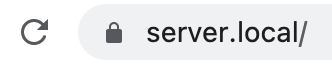

Https & Certificates¶
ide49 uses the https protocol to encrypt the traffic between the Raspberry PI and the browser.
Despite, and, actually, because of this “secure” choice, browsers give a warning to the contrary:

Fig. 13 Browser warning¶
If you ignore the warnings and load the site anyway, the url in the search bar shows a warning:

Fig. 14 Not secure?¶
The reason for this is the way https works. To guarantee safe communication, https
Encrypts all traffic, and
Ensures the identiy of the server.
For example, when you access your bank over https, the browser verifies that the website you are looking at actually belongs to your bank and not a hitch-hiker presenting itself with a similar (same) website at a similar (or the same) URL as your bank.
This is ensured with a certificate, a digital document that encodes the URL of the server along with some additional data and a public encryption key. On the device this notebook is running on, the certificate looks as follows:
!cat /service-config/nginx/ssl/cert.crt
-----BEGIN CERTIFICATE-----
MIIDxTCCAq2gAwIBAgIUC4/mzMvLEBXS0dEbeP/RC+xfmAkwDQYJKoZIhvcNAQEL
BQAwcDELMAkGA1UEBhMCVVMxCzAJBgNVBAgMAkNBMRYwFAYDVQQHDA1TYW4gRnJh
bmNpc2NvMRwwGgYDVQQKDBNFbGVjdHJvbmljcyBmb3IgSW9UMQ4wDAYDVQQLDAVp
b3Q0OTEOMAwGA1UEAwwFaW90NDkwHhcNMjEwNjI4MTg0ODI4WhcNMzEwNjI2MTg0
ODI4WjBwMQswCQYDVQQGEwJVUzELMAkGA1UECAwCQ0ExFjAUBgNVBAcMDVNhbiBG
cmFuY2lzY28xHDAaBgNVBAoME0VsZWN0cm9uaWNzIGZvciBJb1QxDjAMBgNVBAsM
BWlvdDQ5MQ4wDAYDVQQDDAVpb3Q0OTCCASIwDQYJKoZIhvcNAQEBBQADggEPADCC
AQoCggEBAOWhUlDZWBA7E9G96/2IXaAicSpFXHsZi3R8gk8HWRQVf1LkyjV37U5M
oHAT+G3ZxfK6NNniEW2ZV7l+EVqf8MYBUjs/nKpti8hwcWsoLkh07gTJ9G5gqlXx
H+gXKV10f9DtqyLjQqXn541rLogLSzg0FvHe/yeLh0oKblO+rsvP3bUfDt3lRbgh
VAwO3LDYtuRhzKbxLuoRCSLFjiq+Ig7ipA58+AwIXfFnRCl8bEFR6KglO3j7SSwJ
jOKtiljwZccdQpjV7ATiR0PnXLvfPJK6nsgQXFDCTrk/mcVL4zii1HITFp5sfNy7
6m3KcNYK5q7tbpGmFe5AG2V//UmEY50CAwEAAaNXMFUwDgYDVR0PAQH/BAQDAgOI
MBMGA1UdJQQMMAoGCCsGAQUFBwMBMC4GA1UdEQQnMCWCD3BpNHNlcnZlci5sb2Nh
bIIMMTAuMzkuNDAuMTUxhwQKJyiXMA0GCSqGSIb3DQEBCwUAA4IBAQCwR2l7i1Ud
KqGjtJKxg4jiHwAgixQKUrJlcrC2sDWmdntIuyj8feNqGGflax7a+o31cByoQcc+
mGoeA9W7YvWXCjvQrlVsJbzJP0hEmsM+9nRu7WkwP+X4OtF2ULplxvIcvTiqBUyu
lflOr9wXBoMHEDz+cHIJondQXul5MIzYRypemYVWMAIpt53iwufv1p4ARtLA0co7
V5dLaRM/cIytubcvb+Pq7OgDu9Gt6SJPecJAdVkD/8UPvaheO0l+zjmYtFARpoKV
VBbF8BBVsylj8nFyaPSzKgfBY/eXk9w6Lg4OQ5ZkM5izzD9RZyhowYfbC9i8AM0J
XaTG2RPUp/BG
-----END CERTIFICATE-----
When the browser connects to the server, the server sends the certificate. The browser decodes it and verifies that the URLs match (which is why the certificate changes when you alter the DNS_NAME). It also sends a challenge to the server which requires the private key (known only to the server) to solve.
ide49 stores the private key at /service-config/nginx/ssl/cert.key. It looks similar to the certificate but I won’t reproduce it here since it is private, aka top secret. The private key on your instance differs, even if you use the same DNS_NAME.
The browser checks if the certificate is valid. This is a bit like a customs agent checking your passport - she verifies your name, picture, eye color and what do I know, and then also makes sure your passport is a real passport issued by a real country.
Here lies the problem with ide49’s “self-signed certificates”: they meet all requirements and the encryption is just as strong as with a real certificate, but the browser has never seen one alike. Just like the customs agent rejects the beautiful passport you created yourself, the browser won’t trust certificates issued by ide49.
This begs the question how browsers verify certificates from other websites such as https://iot49.org. The answer is that browsers come with preinstalled certificates (an elaborate chaining scheme permits one certificate to vouch for many derived certificates), but unfortunately the certificates created by ide49 are not among them.
There are two solutions to this problem:
Buy a real domain name like
iot49.orgorgoogle.comand get a real certificate for it from a real certificate authority. You’ll also need to expose your device to the internet (not just locally). Obviously this is neither private nor necessarily secure.Alternatively, add the certificate of your device to the list of trusted certificates.
Adding certificates depends on the operating system. “Google” add certificate to chrome or something similar for instructions for your setup.
Your efforts will be rewarded with a nice lock displayed in the search bar and there will no longer be warnings when you connect to https://iot49.local.
{kind=link}
Adding Certificate on MacOS¶
These instructions are as of December 2021 for Chrome on MacOS. These steps are known not change every once in a while, so they may be outdated by the time you read this.
The first step is to get the certificate. In Chrome, click the red triangle in the search bar. Alternatively you can grab it from folder /service-config/nginx/ssl/cert.crt.

Click “Certificate is not valid”. A page describing the certificate pops up. The name of the certificate is iot49 followed by the domain name (default iot49, but server in the picture below).

Grab the certificate icon with the gold seal and drag it to the desktop.
Now open the keychain Access.app (search for it from the search menu in the top toolbar on the Mac screen).

From the file menu, choose Import items ... to import the certificate you dragged to the desktop. Enter the administrator password when asked. Then look for the certificate in the keychain window (make sure “System” is checked) and double click it. Open the Trust section.
{kind=link}
In the pull-down menu, choose Always Trust. Close the window (red cross) and enter your password when asked.
Important: Clear Chrome’s certificate cache. I had to clear everything, including cookies, for the new policy to take effect.

Close existing browser windows and load the iot49 landing site. The Chrome search bar shows the site as “secure”.
{kind=link}